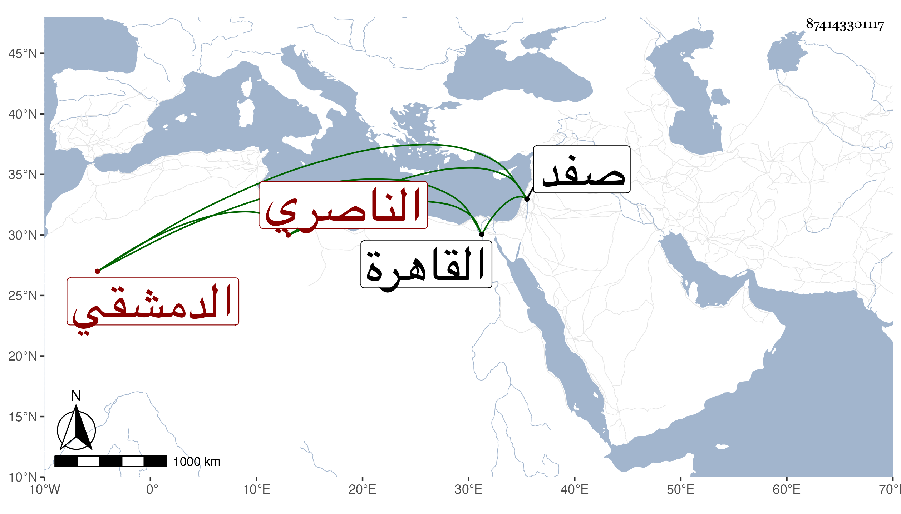

0902Sakhawi.DawLamic.ITO20230111-ara1.EIS1600.874143301117
Biography ID: 874143301117
891
إسماعيل بن إبراهيم بن خضر عماد الدين بن برهان الدين الناصري ، نسبة للناصرة قرية من صفد الدمشقي النفي أخو الفاضل محيي الدين الملقب كبيش المعجم وصاحب الترجمة أسن فمولده قريب سنة أربعين وثمانمائة وكان أبوهما شاهدا وخدم هذا العلاء بن قاضي عجلون وترقى عنده ولكن مع ذلك لم يستنبه فلما استقر الشرف ابن عيد استنابه بمرسوم سلطاني قيل إنه تكلف لأجله بخمسمائة دينار ثم ناب عن التاج بن عربشاه وامتنع من النيابة عن ابن القصيف ثم استقل بعده في سادس عشري رجب سنة ست وثمانين وحمد مع جهله في سياسته ودربته مع إلمام بالتوقيع وحسن الخط والشكالة والعمة بحيث انفرد بحسن عمامته وقدم القاهرة غير مرة في سنة إحدى وتسعين ثم أودع المقسرة ودام مدة ثم أطلق ثم أعيد إليها .
